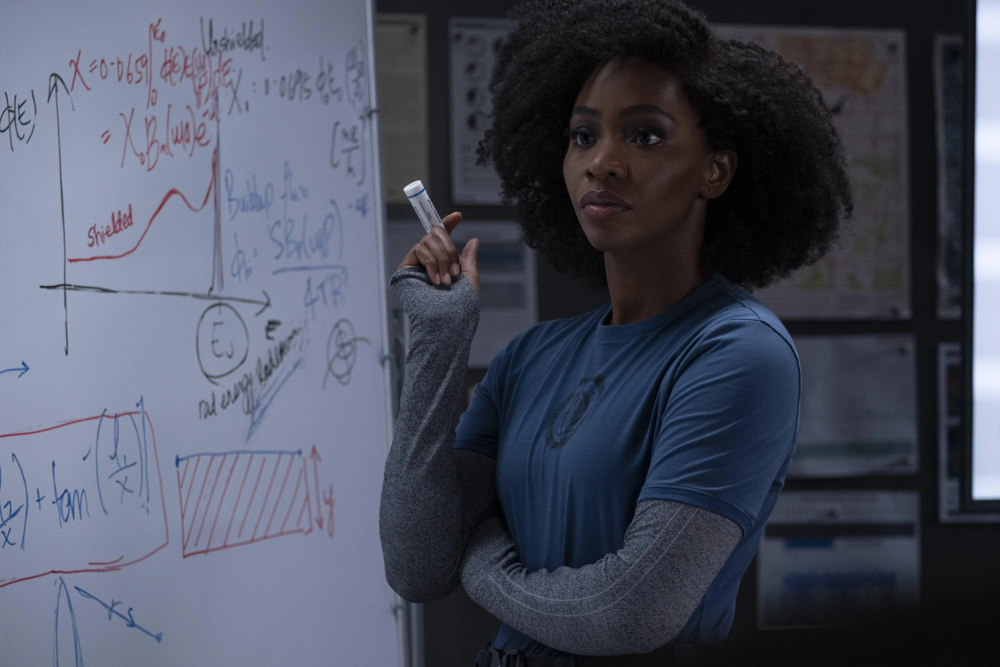

Monica Rambeau
Interpretada por: Teyonah Parris
Descripción del personaje
Monica Rambeau, interpretada por la talentosa Teyonah Parris, es un personaje clave en la serie WandaVision. Inicialmente presentada como la agente de S.W.O.R.D. que investiga la anomalía en Westview, Monica se convierte en una figura central al descubrir más sobre la realidad alterada de Wanda. Su conexión con la familia Rambeau y su experiencia única la convierten en un enlace importante entre el mundo exterior y la ilusión creada por Wanda.
Conexión con las sitcoms
Aunque Monica Rambeau no está directamente conectada con las sitcoms en términos de adaptación de épocas televisivas, su participación en la serie sigue la tradición de personajes que interactúan con la realidad alterada de Wanda. Su presencia añade capas de drama y realidad a la comedia superficial de las sitcoms, ya que lucha por entender y enfrentar los eventos sobrenaturales en Westview.
Desarrollo del personaje
A lo largo de la serie, Monica Rambeau experimenta un significativo desarrollo de personaje. Desde su introducción como agente de S.W.O.R.D. hasta su adopción de habilidades sobrenaturales después de atravesar la barrera de energía de Westview, Monica se convierte en una fuerza empoderada y valiente. Su conexión con las sitcoms radica en su participación en la trama general de la serie, aportando una perspectiva única y emocional al conflicto entre Wanda y la realidad.